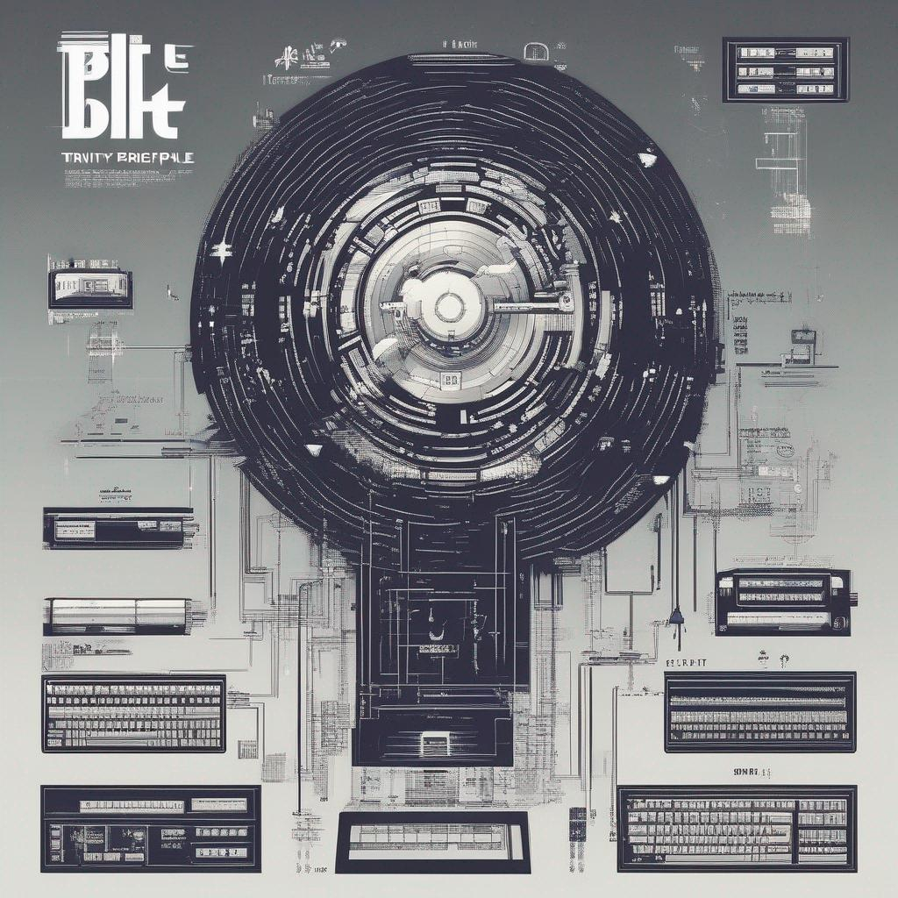

Hey there, aspiring game creators! 👋 Are you itching to dive into the world of game development but find yourself staring at a blank canvas, unsure where to start? Don't worry; you're not alone! Coming up with fantastic game ideas can be a challenging but incredibly rewarding process.
Today, we're going to explore a powerful technique for generating awesome game ideas: the Trinity of Games and the BUT Principle! These tools are perfect for newcomers to game development who want to craft unique and engaging gaming experiences.
The Trinity of Games
The Trinity of Games is a magical trio of elements that form the foundation of every game. Understanding and manipulating these elements can help you come up with exciting game concepts:
- Mechanics 🕹️: refer to the rules, systems, and interactions that make your game playable. Think of them as the nuts and bolts of your game. Examples include jumping in Super Mario, solving puzzles in Portal, or building structures in Minecraft.
Example: Imagine a game where players control a spaceship and must navigate through a maze of asteroids, avoiding collisions while collecting power-ups for their ship.
- Aesthetics 🎨: encompass the visual, auditory, and sensory aspects of your game. These elements shape the atmosphere and mood of your game. Examples include the dark, eerie atmosphere of Silent Hill or the colorful, whimsical world of Stardew Valley.
Example: Picture a game with a vibrant, neon-colored cyberpunk cityscape, accompanied by a pulsating electronic soundtrack, where players take on the role of a rogue hacker infiltrating a corporate stronghold.
- Narrative 📖: involves the story, characters, and plot of your game. It's the "why" behind what players are doing. Examples include the epic adventure of The Legend of Zelda or the emotional journey of The Last of Us.
Example: Consider a game set in a post-apocalyptic world where players must unite factions to rebuild society. Choices made throughout the game affect the outcome, leading to multiple story branches.
The BUT Principle
Now, let's sprinkle some creativity on top of the Trinity of Games with the BUT Principle. This principle encourages you to combine unexpected elements to create something fresh and exciting. Here's how it works:
- Start with an Idea 💡: Begin with a basic game idea. It could be something simple like a platformer, a racing game, or a puzzle game.
- Add a BUT 🍒: Now, add a twist or BUT to your idea. This is the unexpected element that sets your game apart. It could be a unique gameplay mechanic, a quirky art style, or an unconventional setting.
- Explore Possibilities 🌈: Once you've added the BUT, let your imagination run wild! Think about how this twist can impact the mechanics, aesthetics, and narrative of your game. This is where the magic happens!
Example: You start with the idea of a platformer, BUT your character can only move by drawing paths on the screen. Suddenly, you have a game where players have to use their creativity to create paths through challenging levels!
The BUT Principle in Released Games
Some real-world examples of games that successfully applied the BUT Principle to create unique and memorable experiences:
Portal
- Idea: A first-person puzzle game.
- BUT: the player has a portal gun that can create linked portals on surfaces, challenging traditional notions of space and physics.
- Result: The game became a groundbreaking hit, blending mind-bending puzzles with a darkly humorous narrative.
Undertale
- Idea: A classic RPG with turn-based combat.
- BUT: the player can choose to spare or befriend enemies rather than defeat them, leading to a unique and non-violent approach to role-playing.
- Result: "Undertale" gained widespread acclaim for its innovative approach to storytelling and morality in gaming.
Minecraft
- Idea: An open-world sandbox game.
- BUT: the entire world is made up of blocks that players can break and place, allowing for limitless creativity and construction.
- Result: "Minecraft" became a global phenomenon, inspiring creativity and collaboration among players worldwide.
Braid
- Idea: A 2D platformer.
- BUT: time moves in reverse or slows down as the player desires, creating intricate puzzles and gameplay that challenges conventional platformers.
- Result: "Braid" received critical acclaim for its unique take on time-based gameplay and storytelling.
Putting It All Together
Let's combine the Trinity of Games and the BUT Principle to create a unique game concept:
- Mechanics: Players control a quirky robot with the ability to manipulate gravity. The robot can walk on walls and ceilings, opening up a whole new dimension of gameplay.
- Aesthetics: Set in a surreal, steampunk-inspired world filled with floating islands and mechanical creatures. The visual style is a fusion of Victorian elegance and whimsical machinery.
- Narrative: The robot embarks on a quest to save a floating city from a mysterious threat, uncovering the secrets of its own creation along the way.
- BUT: The game is played entirely in a 2D side-scrolling perspective, challenging players to rethink gravity and physics in this captivating world.
And there you have it! By combining the Trinity of Games with the BUT Principle, you can cook up some truly extraordinary game ideas that are sure to grab the attention of players and fellow game developers alike.
So, grab your favorite game design tools and start experimenting with these concepts. Who knows? Your next game idea might just be the next big hit! 🚀🎮😃 If you enjoy the ride, please consider supporting my personal projects.
{ Buy me a coffee }